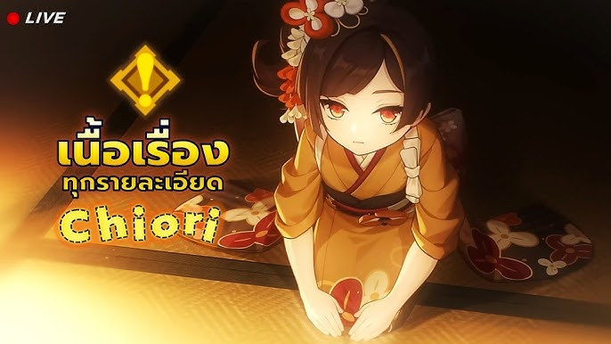
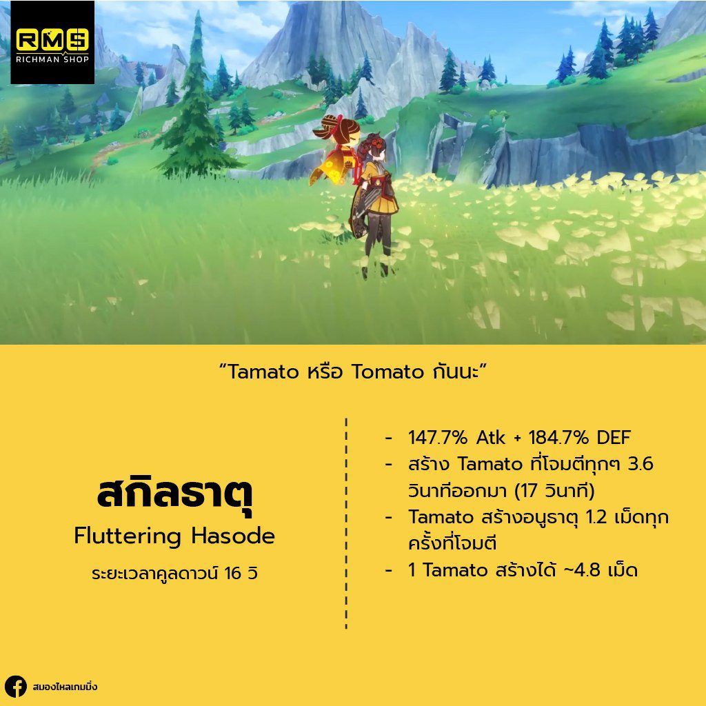
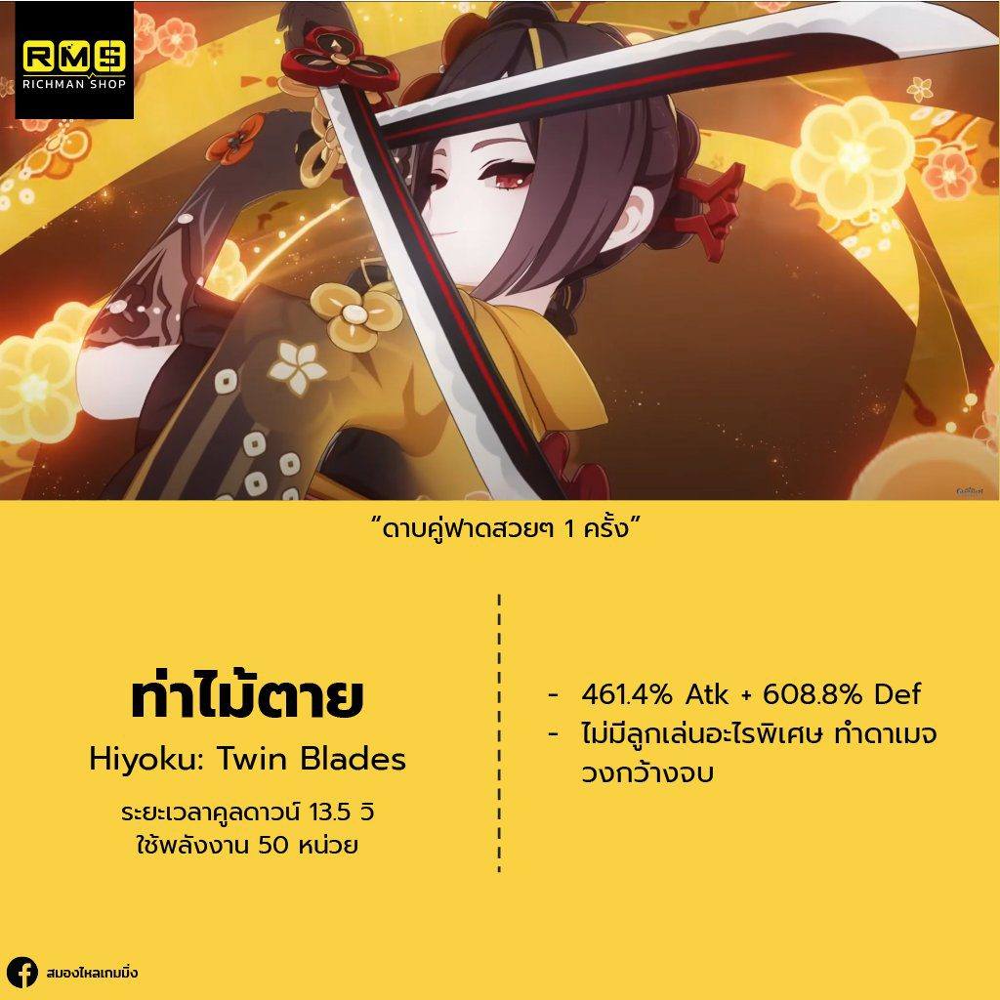
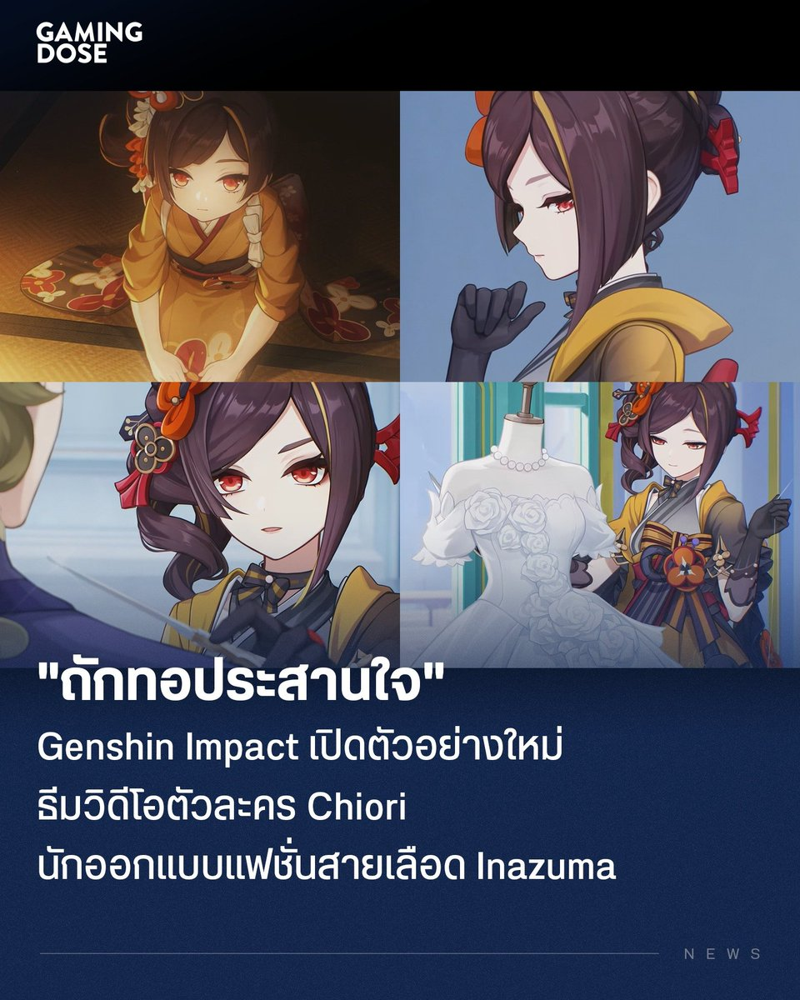
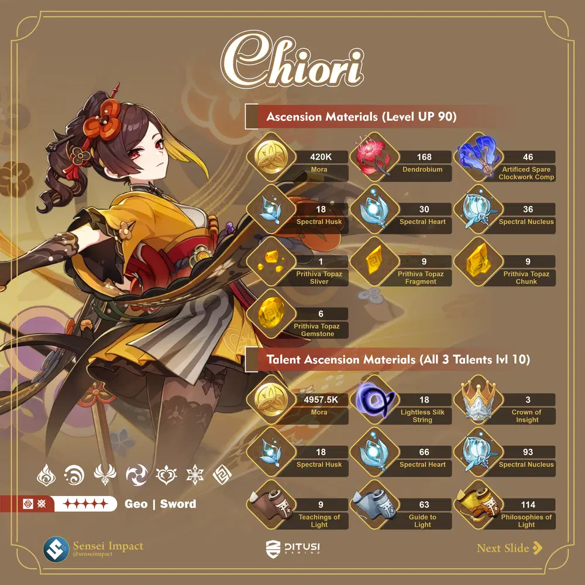

นักลอบสังหารจากเงามืด ผู้ใช้ธาตุหินและกริชคู่
ข้อมูลเบื้องต้น
ชื่อ: Chiori
ฉายา: The Shadow Whisperer
เพศ: หญิง
วันเกิด: 12 ธันวาคม
ธาตุ: หิน (GEO)
อาวุธ: กริชคู่ (Dual Daggers)
กลุ่มหรือองค์กร: The Night Stalkers
ภูมิหลัง
Chiori เป็นนักลอบสังหารที่มีทักษะพิเศษในการเคลื่อนไหวในที่มืด เธอเติบโตในเมืองที่เต็มไปด้วยความเสี่ยง และเรียนรู้ที่จะอยู่รอดจากการต่อสู้ในโลกที่โหดร้าย โดยเฉพาะการใช้ธาตุหินที่ช่วยเสริมพลังการโจมตีของเธอ
สกิลและความสามารถ


สกิลธาตุ: Shadow Strike (โจมตีด้วยกริชที่เคลื่อนไหวด้วยความเร็วสูง)
สกิลไม้ตาย: Dark Veil (ปล่อยม่านความมืดที่ปกคลุมพื้นที่ทั้งหมด ลดความสามารถของศัตรูและเพิ่มความเร็วให้กับตัวเอง)
บุคลิกและลักษณะนิสัย
Chiori เป็นคนเงียบขรึม แต่มั่นใจในความสามารถของตัวเอง เธอมีจิตใจที่มุ่งมั่นในการทำภารกิจให้สำเร็จ และไม่กลัวที่จะเผชิญหน้ากับอุปสรรค
ข้อมูลการพัฒนา (Ascension)
วัสดุพัฒนา: Rock Crystal, Earth Essence, Assassin's Emblem
คอนสเตลเลชัน

- Constellation 1: Whisper of Stones
- Constellation 2: Blade Dance
- Constellation 3: Silent Assassin
- Constellation 4: Stony Path
- Constellation 5: Earth Embrace
- Constellation 6: Dance of the Rocks
เสียงพากย์
ภาษาญี่ปุ่น: Yui Ishikawa
ภาษาอังกฤษ: Cristina Vee